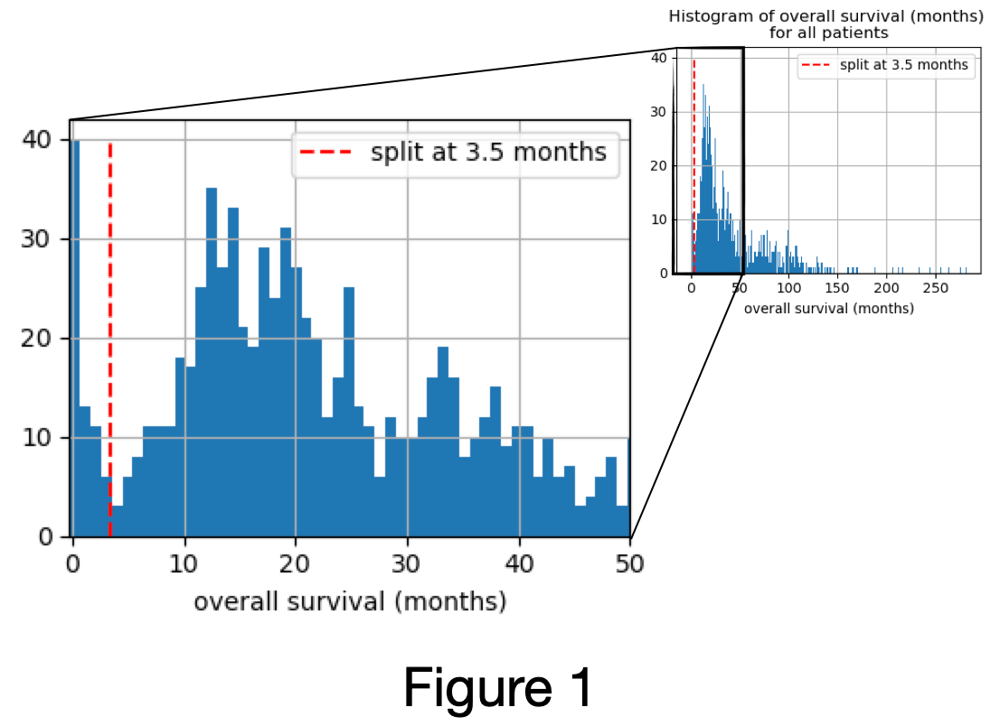
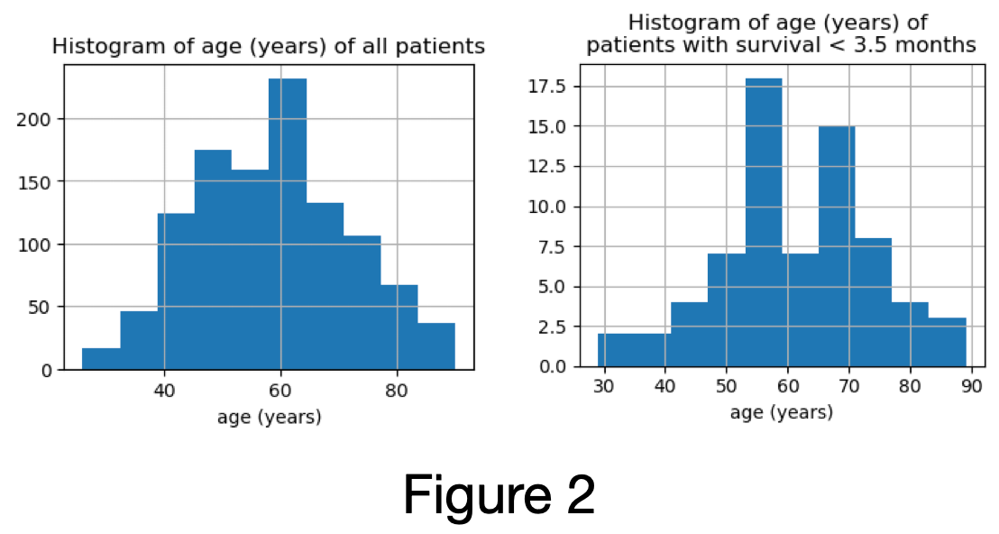

Keeper tutorial
The primary data structure used in netflow is called a Keeper. It is used to load, store, manipulate and save data for a set of observations. In particular, there are several specific types of keepers:
DataKeeper: handles feature dataDistanceKeeper: handles pairwise-observation distances (also used to handle pairwise observation similarities)GraphKeeper: handles graphs (networks)
Interacting with netflow will primarily entail making use of the predomenent Keeper, which implicitly makes use of the aforementioned specific keeper classes. This tutorial therefore focuses on the Keeper class, please see the documentation for more detail on the other Keeper classes.
Data is organized in the Keeper class via the following attributes:
self.oudir: (directory path) : Path to directory where results will be saved.If not provided, no results can be saved.
self.observation_labels: (list) Observation labels are kept consistent across all feature data, distances and similarities.self.data: (DataKeeper) Used to handle all feature data.self.distances: (DistanceKeeper) Used to handle all observation-pairwise distances.self.similarities: (DistanceKeeper) Used to handle all observation-pairwise similarities.self.graphs: (GraphKeeper) Used to handle all graphs.self.misc: (dict) Used to handle any miscellaneous data.Caution should be taken as observation labels and/or ordering of data stored in
self.miscmay not be consistent with the observations as tracked by theKeeper.
We will now walk through some use-cases of how to make use of the Keeper class.
First, import the necessary packages:
Load libraries#
import pathlib
import sys
from collections import defaultdict as ddict
import itertools
import matplotlib.pyplot as plt
import networkx as nx
import numpy as np
import pandas as pd
import scipy.sparse as sc_sparse
from tqdm import tqdm
If netflow has not been installed, add the path to the library:
sys.path.insert(0, pathlib.Path(pathlib.Path('.').absolute()).parents[3].resolve().as_posix())
# sys.path.insert(0, pathlib.Path(pathlib.Path('.').absolute()).parents[0].resolve().as_posix())
From the netflow package, we load the following modules:
The
InfoNetclass is used to compute 1-hop neighborhood distancesThe
Keeperclass is used to store and manipulate data/results
import netflow as nf
# from netflow.keepers import keeper
Set up directories#
MAIN_DIR = pathlib.Path('.').absolute()
Paths to where data is stored:
DATA_DIR = MAIN_DIR / 'example_data' / 'breast_tcga'
RNA_FNAME = DATA_DIR / 'rna_606.txt'
E_RNA_FNAME = DATA_DIR / 'edgelist_hprd_rna_606.txt'
CNA_FNAME = DATA_DIR / 'cna_606.txt'
E_CNA_FNAME = DATA_DIR / 'edgelist_hprd_cna_606.txt'
METH_FNAME = DATA_DIR / 'methylation_606.txt'
E_METH_FNAME = DATA_DIR / 'edgelist_hprd_methylation_606.txt'
CLIN_FNAME = DATA_DIR / 'clin_606.txt'
Directory where output should be saved:
OUT_DIR = MAIN_DIR / 'example_data' / 'results_netflow_breast_tcga'
Load data#
We first load example TCGA breast cancer data that will be used to demonstrate how data can be loaded into the Keeper.
Sample inclusion criteria (n=606):
Restricted to
Primary samples
Cancer type: Breast Cancer
Detailed cancer type: Breast Invasive Ductal Carcinoma (IDC) or Breast Invasive Lobular Carcinoma (ILC)
Has reported overall survival status
Overall survival > 3.5 months (Figure 1)

distribution of age of patients excluded is similar to distribution of the age of all samples (Figure 2)

Has reported PAM50 subtype
Has RNA, CNA and methylation data
Feature data:
RNA (7,148 genes)
Remove genes that have zero expression in at least 20% (=121) of samples
When multiple Entrez IDs map to the same gene, use the sum
Restrict to largest connected component of genes in HPRD
CNA (8,763 genes)
When multiple Entrez IDs map to the same gene, select the more extreme value (i.e., in absolute value). If the absolute values are the same, select the loss.
Restrict to largest connected component of genes in HPRD
Translate from [-2, 2] -> [0, 4]
methylation (7,969 genes)
Missing rate is at most 5.12% - used nearest-neighbor imputation computed in Python using the scikit-learn
KNNImputerwith default parameters exceptweights=“distance”.When multiple Entrez IDs map to the same gene, select the max.
Restrict to largest connected component of genes in HPRD
Network edgelists (derived from HPRD):
RNA edgelist (7,148 nodes and 27,498 edges)
CNA edgelist (8,763 nodes and 34,906 edges)
methylation edgelist (7,969 nodes and 31,112 edges)
rna = pd.read_csv(RNA_FNAME, header=0, index_col=0)
print(rna.shape)
display(rna.head(2))
(7148, 606)
| TCGA-E9-A295-01 | TCGA-AR-A1AS-01 | TCGA-AQ-A1H2-01 | TCGA-A8-A08O-01 | TCGA-BH-A1FJ-01 | TCGA-JL-A3YX-01 | TCGA-A7-A425-01 | TCGA-AC-A2BM-01 | TCGA-LL-A6FP-01 | TCGA-A7-A26E-01 | ... | TCGA-A2-A1G0-01 | TCGA-WT-AB41-01 | TCGA-EW-A1P6-01 | TCGA-XX-A89A-01 | TCGA-A7-A4SD-01 | TCGA-AC-A6IX-01 | TCGA-AR-A24L-01 | TCGA-BH-A42U-01 | TCGA-AR-A24S-01 | TCGA-BH-A0BC-01 | |
|---|---|---|---|---|---|---|---|---|---|---|---|---|---|---|---|---|---|---|---|---|---|
| ABCB8 | 910.2982 | 624.0432 | 422.2278 | 659.3773 | 836.3215 | 1202.2298 | 1264.0832 | 759.0133 | 2768.8172 | 560.3929 | ... | 840.2367 | 1074.9211 | 769.4139 | 922.0595 | 597.0149 | 863.0025 | 451.0316 | 795.7087 | 606.1712 | 950.1840 |
| SAT1 | 2727.0313 | 2731.2022 | 3701.4551 | 2259.7105 | 3085.1455 | 3915.4537 | 3230.3552 | 2042.0907 | 3258.4005 | 4837.8020 | ... | 1728.7968 | 6252.3659 | 2843.2332 | 7392.0642 | 3602.4876 | 3878.9536 | 2552.8859 | 5193.3684 | 5891.7026 | 3594.8176 |
2 rows × 606 columns
E_rna = pd.read_csv(E_RNA_FNAME, header=0)
display(E_rna.head(2))
G_rna = nx.from_pandas_edgelist(E_rna)
G_rna.name = 'rna'
print(G_rna)
| source | target | |
|---|---|---|
| 0 | ABCB8 | SAT1 |
| 1 | SAT1 | APLP1 |
Graph named 'rna' with 7148 nodes and 27498 edges
cna = pd.read_csv(CNA_FNAME, header=0, index_col=0)
print(cna.shape)
display(cna.head(2))
(8763, 606)
| TCGA-E9-A295-01 | TCGA-AR-A1AS-01 | TCGA-AQ-A1H2-01 | TCGA-A8-A08O-01 | TCGA-BH-A1FJ-01 | TCGA-JL-A3YX-01 | TCGA-A7-A425-01 | TCGA-AC-A2BM-01 | TCGA-LL-A6FP-01 | TCGA-A7-A26E-01 | ... | TCGA-A2-A1G0-01 | TCGA-WT-AB41-01 | TCGA-EW-A1P6-01 | TCGA-XX-A89A-01 | TCGA-A7-A4SD-01 | TCGA-AC-A6IX-01 | TCGA-AR-A24L-01 | TCGA-BH-A42U-01 | TCGA-AR-A24S-01 | TCGA-BH-A0BC-01 | |
|---|---|---|---|---|---|---|---|---|---|---|---|---|---|---|---|---|---|---|---|---|---|
| ABCB8 | 2 | 2 | 1 | 2 | 2 | 2 | 3 | 2 | 3 | 2 | ... | 3 | 2 | 2 | 2 | 1 | 2 | 2 | 2 | 2 | 2 |
| SAT1 | 2 | 2 | 1 | 1 | 2 | 1 | 2 | 1 | 2 | 2 | ... | 3 | 2 | 2 | 1 | 1 | 2 | 2 | 2 | 2 | 2 |
2 rows × 606 columns
E_cna = pd.read_csv(E_CNA_FNAME, header=0)
display(E_cna.head(2))
G_cna = nx.from_pandas_edgelist(E_cna)
G_cna.name = 'cna'
print(G_cna)
| source | target | |
|---|---|---|
| 0 | ABCB8 | SAT1 |
| 1 | SAT1 | APLP1 |
Graph named 'cna' with 8763 nodes and 34906 edges
Initialize the Keeper#
The Keeper can be instatiated with or without outdir - an output directory:
# uncomment to initialize Keeper with no output directory:
# keeper = nf.Keeper()
# initializing Keeper with output directory:
keeper = nf.Keeper(outdir=OUT_DIR)
See the documentation for more details on initializing the Keeper.
Load data into the Keeper#
Currently, data is expected to be either in the form of a numpy.ndarray or pandas.DataFrame, or saved in a file that is loadable via pandas.read_csv, with observations as columns and features as rows.
Data can be loaded into the Keeper in two ways:
i. From a numpy.ndarray or pandas.DataFrame or
ii. Directly from a file that is loadable via pandas.read_csv
Note: Future releases will handle various file types.
keeper.add_data(rna, 'rna')
The first time data is loaded into keeper, it sets the observation labels that must be consistent with any other feature data set, pairwise-observation distances data and pairwise-observation similarities data that will be added to keeper here on out.
If instead the feature data was provided as a numpy.ndarray, observation labels default to 'X0', 'X1', ....
Within the netflow environment, this data can be specified by specifying the data set’s reference label or key, e.g., key='rna'.
We see that keeper has updated the observation labels:
# uncomment to print out all observation labels:
# keeper.observation_labels
We can also upload the cna data:
keeper.add_data(cna, 'cna')
Similarly, we can add the graphs associated with the RNA data:
keeper.add_graph(G_rna, 'rna')
If we had pairwise-observation distances or similarities, we could add them to keeper in the same manner using the methods:
keeper.add_distance()keeper.add_similarity()
Suppose we had some miscellaneous data, for example a list of genes of interest, that we wanted to store in the Keeper, this could be done as follows:
gene_list = ['SLC3A1', 'TIMM13', 'STYX', 'MUC6', 'TIMM17B', 'TNFSF18', 'TOMM7', 'TOMM40',
'TRAPPC2L', 'AZU1', 'TUBB1', 'XCR1', 'VPS33B', 'XCL2', 'KNTC1']
keeper.add_misc(gene_list, 'my_gene_list')
Load data into keeper at time of instatiation#
Alternatively, you can specify any data, distances, similarities, graphs, or miscelaneous data to be loaded into the Keeper at the same time as it’s initialized. For example, we initialize the Keeper and load the RNA and CNA feature data and their associated graphs in one call:
keeper = nf.Keeper(data={'rna': rna, 'cna': cna}, graphs={'rna': G_rna, 'cna': G_cna})
See the documentation on additional options for initializing and loading data into a Keeper.
Load data into Keeper from file#
Alternatively, we can load data, distances, similarities, and graphs directly from a file.
Currently, file formats that can be loaded by pandas.read_csv are accepted. Future releases will offer additional file types.
We start by initializing a Keeper and then load the RNA and CNA data from file. The argument label is used to specify how the data is referenced in the Keeper.
keeper = nf.Keeper(outdir=OUT_DIR)
# Add RNA and CNA feature data:
keeper.load_data(RNA_FNAME, label='rna', header=0, index_col=0)
keeper.load_data(CNA_FNAME, label='cna', header=0, index_col=0, dtype=float)
# uncomment to add methylation feature data:
# keeper.load_data(METH_FNAME, label='meth', header=0, index_col=0)
We next add the graphs associated with RNA and CNA. (See the documentation for more details and the expected edgelist format.)
keeper.load_graph(E_RNA_FNAME, label='rna')
keeper.load_graph(E_CNA_FNAME, label='cna')
# uncomment to add methylation graph:
# keeper.load_graph(E_METH_FNAME, label='meth')
Similarities and distances can be loaded from file into the Keeper in the same manner via:
keeper.load_distance()orkeeper.load_stacked_distance()keeper.load_similarity()orkeeper.load_stacked_similarity()
See the documentaion for more details.
Extract data from the Keeper#
We can extract the data in the form of a pandas.DataFrame as follows:
df = keeper.data['rna'].to_frame()
df.head(3)
| TCGA-E9-A295-01 | TCGA-AR-A1AS-01 | TCGA-AQ-A1H2-01 | TCGA-A8-A08O-01 | TCGA-BH-A1FJ-01 | TCGA-JL-A3YX-01 | TCGA-A7-A425-01 | TCGA-AC-A2BM-01 | TCGA-LL-A6FP-01 | TCGA-A7-A26E-01 | ... | TCGA-A2-A1G0-01 | TCGA-WT-AB41-01 | TCGA-EW-A1P6-01 | TCGA-XX-A89A-01 | TCGA-A7-A4SD-01 | TCGA-AC-A6IX-01 | TCGA-AR-A24L-01 | TCGA-BH-A42U-01 | TCGA-AR-A24S-01 | TCGA-BH-A0BC-01 | |
|---|---|---|---|---|---|---|---|---|---|---|---|---|---|---|---|---|---|---|---|---|---|
| ABCB8 | 910.2982 | 624.0432 | 422.2278 | 659.3773 | 836.3215 | 1202.2298 | 1264.0832 | 759.0133 | 2768.8172 | 560.3929 | ... | 840.2367 | 1074.9211 | 769.4139 | 922.0595 | 597.0149 | 863.0025 | 451.0316 | 795.7087 | 606.1712 | 950.1840 |
| SAT1 | 2727.0313 | 2731.2022 | 3701.4551 | 2259.7105 | 3085.1455 | 3915.4537 | 3230.3552 | 2042.0907 | 3258.4005 | 4837.8020 | ... | 1728.7968 | 6252.3659 | 2843.2332 | 7392.0642 | 3602.4876 | 3878.9536 | 2552.8859 | 5193.3684 | 5891.7026 | 3594.8176 |
| ABCF3 | 1310.1533 | 1381.3597 | 1413.9488 | 1078.8295 | 992.8420 | 1273.1496 | 1344.0976 | 1256.8570 | 2183.8038 | 1067.4277 | ... | 1055.8843 | 2185.3312 | 1145.1250 | 1031.6486 | 1705.9701 | 1292.1338 | 924.5234 | 1223.4741 | 1003.6413 | 1278.0836 |
3 rows × 606 columns
Similarly, this can be done for any key in the distance or similarity keeper in the form:
keeper.distances[key].to_frame()keeper.similarities[key].to_frame()
Next, we demonstrate how to get a graph that has been stored in keeper, keyed by its reference label:
G = keeper.graphs['rna']
print(G)
Graph named 'rna' with 7148 nodes and 27498 edges
Similarly, we can access miscellaneous data stored in keeper:
# first we add the gene list to the keeper:
keeper.add_misc(gene_list, 'my_gene_list')
# and to access the gene list:
keeper.misc['my_gene_list']
['SLC3A1',
'TIMM13',
'STYX',
'MUC6',
'TIMM17B',
'TNFSF18',
'TOMM7',
'TOMM40',
'TRAPPC2L',
'AZU1',
'TUBB1',
'XCR1',
'VPS33B',
'XCL2',
'KNTC1']
Save data from the Keeper#
Data can be saved from:
keeper.dataviakeeper.save_data()keeper.distancesviakeeper.save_distance()keeper.similaritiesviakeeper.save_similarity()keeper.misc(if it is apandas.DataFrame) viakeeper.save_misc()
Currently, it is saved using pandas.to_csv. Future releases will provide additional formats for saving data.
In order to save data, keeper must have the attribute outdir defined.
The data is then saved to a file named {outdir}/{data_type}_{label}.{file_format} where
outdir: The keeper’s output directory:keeper.outdir.data_type: This is one of {‘data’, ‘distance’, ‘similarity’, ‘misc’}, depending on which method is called to save the data.label: This is reference label for the data in the keeper that should be saved, specified by the user.file_formatThis is the file extension, provided by the user (default = ‘txt’).
See the documentation for more details.
For example, to save the RNA data to the specified output directory, you would call:
keeper.save_data('rna')
Extract Keeper subset#
You can a new Keeper instance with a subset of the observations from the keeper.
Caution should be taken for the resulting misc and graphs keepers, as they are maintained independent of the observations. You can select if the misc and graphs should be copied into the the new subset Keeper, as is.
You can also specify the output directory outdir for the new keeper subset. Default is None.
For example, we can extract a subset of keeper with the first 3 observations, using keep_misc=True and keep_graphs=True to keep a copy of miscellaneous data and the graphs. Additionally, we use outdir to specify the output directory we want for this subset of observations
outdir_sub = OUT_DIR.parent / (OUT_DIR.name + '_sub')
keeper_sub = keeper.subset(keeper.observation_labels[:10],
keep_misc=True, keep_graphs=True,
outdir=outdir_sub)
Extract data subset#
You can extract a subset of observations and features for any data stored in the data-keeper as a pandas.DataFrame:
rna_sub = keeper.data['rna'].subset(observations=keeper.observation_labels[:3],
features=gene_list[:5])
rna_sub
| TCGA-E9-A295-01 | TCGA-AR-A1AS-01 | TCGA-AQ-A1H2-01 | |
|---|---|---|---|
| SLC3A1 | 4.8292 | 0.0000 | 3.1360 |
| TIMM13 | 1078.3533 | 992.7960 | 708.2288 |
| STYX | 829.6511 | 542.0982 | 403.1611 |
| MUC6 | 1.4488 | 130.1216 | 0.0000 |
| TIMM17B | 827.7194 | 573.1652 | 739.5886 |
Similarly, you can extract distances (or similarities) between a subset of observations as a pandas.DataFrame. We’ll first add a distance to the keeper to demonstrate this:
from scipy.spatial.distance import cdist
rna_euc = pd.DataFrame(data=cdist(rna.T, rna.T, metric='euclidean'),
index=rna.columns.copy(), columns=rna.columns.copy())
keeper.add_distance(rna_euc, 'rna_euc')
keeper.distances['rna_euc'].subset(keeper.observation_labels[:3])
| TCGA-E9-A295-01 | TCGA-AR-A1AS-01 | TCGA-AQ-A1H2-01 | |
|---|---|---|---|
| TCGA-E9-A295-01 | 0.000000 | 351149.925916 | 392258.653370 |
| TCGA-AR-A1AS-01 | 351149.925916 | 0.000000 | 382107.888105 |
| TCGA-AQ-A1H2-01 | 392258.653370 | 382107.888105 | 0.000000 |
The same can be done for a similarity stored in keeper using keeper.similarities in place of keeper.distances.
Iterating through feature data, distances or similarities#
Before demonstrating how to iterate through the data, we review some of the Keeper class properties in a bit more detail:
When we instatiate a Keeper object: keeper = netflow.Keeper(),
the keeper is initialized with an instance of the DataKeeper class assigned as keeper.data and two instances of the DistanceKeeper class assigned as keeper.distances and keeper.similarities. Data is added to the DataKeeper and DistanceKeeper with a reference key which may then be accessed in the same manner as retrieving a value from a dict. However, the DataKeeper and DistanceKeeper maintain a bit more information than just the data itself to regulate observation (and feature) properties. Therefore, keyed-accessing data from DataKeeper or DistanceKeeper returns an instance of DataView or DistanceView, respectively (instead of the original input data).
For example: x = keeper.data['rna']
Here, x is an instance of the DataView class.
The RNA data itself (as a numpy.ndarray) can be accessed via x.data.
And previously, we demonstrated how to extract the data as a pandas.DataFrame: x.to_frame(). (The .to_frame() property is actually a method of the DataView (and DistanceView) class.)
You can iterate over the data stored in a DataKeeper and DistanceKeeper, which yields an instance of DataView and DistanceView, repectively, at each iteration.
Therefore, you can iterate over the feature data, distances and similarities. The process is the same for each type of store data, so we demonstrate this on the feature data.
Here we iterate through all the feature data and print the keyed-label:
for dd in keeper.data:
print(dd.label)
rna
cna
Here we iterate through all the feature data and print out the number of features:
for dd in keeper.data:
print(dd.num_features)
7148
8763
Here we iterate through all the feature data and print out the first 4 feature labels:
for dd in keeper.data:
print(dd.feature_labels[:4])
['ABCB8', 'SAT1', 'ABCF3', 'ARF1']
['ABCB8', 'SAT1', 'ABCF3', 'ARF1']
Here we iterate through all the feature data and print out the stored data for the first 3 observations and first 4 features:
for dd in keeper.data:
print(dd.data[:4, :3])
[[ 910.2982 624.0432 422.2278]
[ 2727.0313 2731.2022 3701.4551]
[ 1310.1533 1381.3597 1413.9488]
[15602.5595 17668.1675 10149.0216]]
[[2. 2. 1.]
[2. 2. 1.]
[2. 3. 2.]
[3. 3. 2.]]
You can also use the key attribute to see the labels of data stored in any of the keepers:
keeper.data.keys()
dict_keys(['rna', 'cna'])
keeper.distances.keys()
dict_keys(['rna_euc'])
keeper.graphs.keys()
dict_keys(['rna', 'cna'])
Membership#
You can check if data is in keeper.data, keeper.distances, or keeper.similarities by its key.
For example, we next check if the RNA feature data is in keeper.dataYou can check if data is in keeper.data, keeper.distances, or keeper.similarities by its key.
For example, we next check if the RNA feature data is in keeper.data
'rna' in keeper.data
True